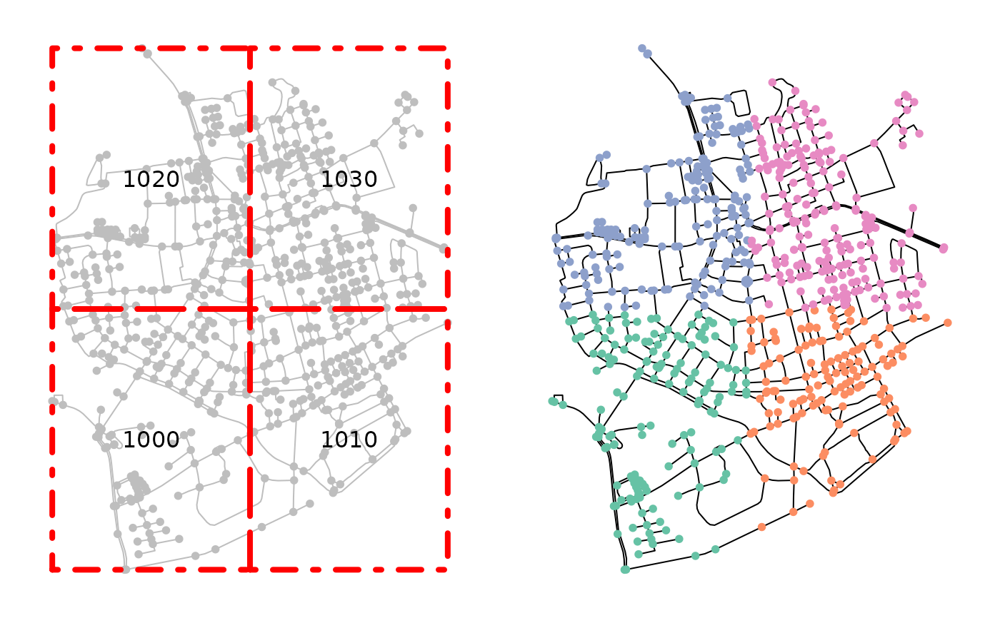
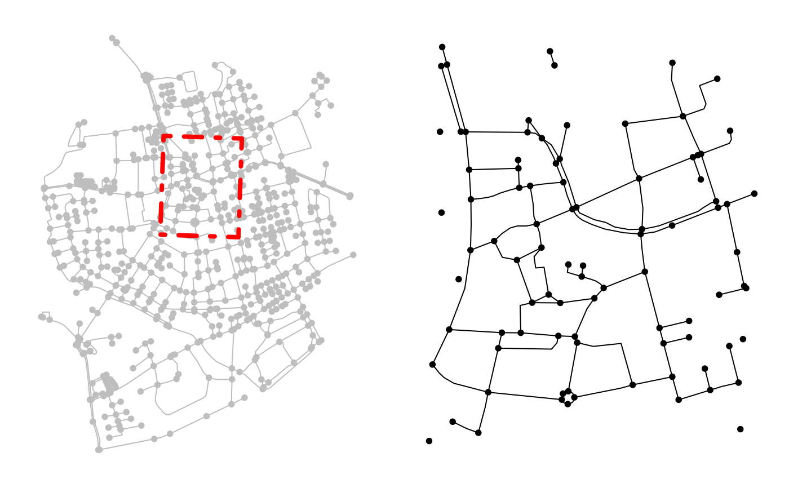

# S3 method for sfnetwork
st_as_sf(x, active = NULL, ...)
# S3 method for sfnetwork
st_geometry(x, active = NULL, ...)
# S3 method for sfnetwork
st_geometry(x) <- value
# S3 method for sfnetwork
st_bbox(x, ...)
# S3 method for sfnetwork
st_coordinates(x, ...)
# S3 method for sfnetwork
st_is(x, ...)
# S3 method for sfnetwork
st_crs(x, ...)
# S3 method for sfnetwork
st_crs(x) <- value
# S3 method for sfnetwork
st_shift_longitude(x, ...)
# S3 method for sfnetwork
st_transform(x, ...)
# S3 method for sfnetwork
st_wrap_dateline(x, ...)
# S3 method for sfnetwork
st_zm(x, ...)
# S3 method for sfnetwork
st_m_range(x, ...)
# S3 method for sfnetwork
st_z_range(x, ...)
# S3 method for sfnetwork
st_agr(x, active = NULL, ...)
# S3 method for sfnetwork
st_agr(x) <- value
# S3 method for sfnetwork
st_intersects(x, y = x, ...)
# S3 method for sfnetwork
st_reverse(x, ...)
# S3 method for sfnetwork
st_simplify(x, ...)
# S3 method for sfnetwork
st_join(x, y, ...)
# S3 method for morphed_sfnetwork
st_join(x, y, ...)
# S3 method for sfnetwork
st_crop(x, y, ...)
# S3 method for morphed_sfnetwork
st_crop(x, y, ...)
# S3 method for sfnetwork
st_filter(x, y, ...)
# S3 method for morphed_sfnetwork
st_filter(x, y, ...)An object of class sfnetwork.
Which network element (i.e. nodes or edges) to activate before
extracting. If NULL, it will be set to the current active element of
the given network. Defaults to NULL.
Arguments passed on the corresponding sf function.
The value to be assigned. See the documentation of the corresponding sf function for details.
An object of class sf, or directly convertible to
it using st_as_sf. In some cases, it can also be an object
of sfg or bbox. Always look
at the documentation of the corresponding sf function for details.
The sfnetwork method for st_as_sf returns
the active element of the network as object of class sf.
The sfnetwork and morphed_sfnetwork methods for
st_join, st_filter and
st_crop return an object of class sfnetwork
and morphed_sfnetwork respectively. All other
methods return the same type of objects as their corresponding sf function.
See the sf documentation for details.
See the sf documentation.
library(sf, quietly = TRUE)
net = as_sfnetwork(roxel)
# Extract the active network element.
st_as_sf(net)
#> Simple feature collection with 701 features and 0 fields
#> Geometry type: POINT
#> Dimension: XY
#> Bounding box: xmin: 7.522622 ymin: 51.94151 xmax: 7.546705 ymax: 51.9612
#> Geodetic CRS: WGS 84
#> # A tibble: 701 × 1
#> geometry
#> <POINT [°]>
#> 1 (7.533722 51.95556)
#> 2 (7.533461 51.95576)
#> 3 (7.532442 51.95422)
#> 4 (7.53209 51.95328)
#> 5 (7.532709 51.95209)
#> 6 (7.532869 51.95257)
#> 7 (7.540063 51.94468)
#> 8 (7.53822 51.94546)
#> 9 (7.537673 51.9475)
#> 10 (7.537614 51.94562)
#> # … with 691 more rows
#> # ℹ Use `print(n = ...)` to see more rows
# Extract any network element.
st_as_sf(net, "edges")
#> Simple feature collection with 851 features and 4 fields
#> Geometry type: LINESTRING
#> Dimension: XY
#> Bounding box: xmin: 7.522594 ymin: 51.94151 xmax: 7.546705 ymax: 51.9612
#> Geodetic CRS: WGS 84
#> # A tibble: 851 × 5
#> from to name type geometry
#> <int> <int> <chr> <fct> <LINESTRING [°]>
#> 1 1 2 Havixbecker Strasse residential (7.533722 51.95556, 7.533461 5…
#> 2 3 4 Pienersallee secondary (7.532442 51.95422, 7.53236 51…
#> 3 5 6 Schulte-Bernd-Strasse residential (7.532709 51.95209, 7.532823 5…
#> 4 7 8 NA path (7.540063 51.94468, 7.539696 5…
#> 5 9 10 Welsingheide residential (7.537673 51.9475, 7.537614 51…
#> 6 11 12 NA footway (7.543791 51.94733, 7.54369 51…
#> 7 13 14 NA footway (7.54012 51.94478, 7.539931 51…
#> 8 8 10 NA path (7.53822 51.94546, 7.538131 51…
#> 9 7 15 NA track (7.540063 51.94468, 7.540338 5…
#> 10 16 17 NA track (7.5424 51.94599, 7.54205 51.9…
#> # … with 841 more rows
#> # ℹ Use `print(n = ...)` to see more rows
# Get geometry of the active network element.
st_geometry(net)
#> Geometry set for 701 features
#> Geometry type: POINT
#> Dimension: XY
#> Bounding box: xmin: 7.522622 ymin: 51.94151 xmax: 7.546705 ymax: 51.9612
#> Geodetic CRS: WGS 84
#> First 5 geometries:
#> POINT (7.533722 51.95556)
#> POINT (7.533461 51.95576)
#> POINT (7.532442 51.95422)
#> POINT (7.53209 51.95328)
#> POINT (7.532709 51.95209)
# Get geometry of any network element.
st_geometry(net, "edges")
#> Geometry set for 851 features
#> Geometry type: LINESTRING
#> Dimension: XY
#> Bounding box: xmin: 7.522594 ymin: 51.94151 xmax: 7.546705 ymax: 51.9612
#> Geodetic CRS: WGS 84
#> First 5 geometries:
#> LINESTRING (7.533722 51.95556, 7.533461 51.95576)
#> LINESTRING (7.532442 51.95422, 7.53236 51.95377...
#> LINESTRING (7.532709 51.95209, 7.532823 51.9523...
#> LINESTRING (7.540063 51.94468, 7.539696 51.9447...
#> LINESTRING (7.537673 51.9475, 7.537614 51.94562)
# Get bbox of the active network element.
st_bbox(net)
#> xmin ymin xmax ymax
#> 7.522622 51.941512 7.546705 51.961203
# Get CRS of the network.
st_crs(net)
#> Coordinate Reference System:
#> User input: EPSG:4326
#> wkt:
#> GEOGCRS["WGS 84",
#> DATUM["World Geodetic System 1984",
#> ELLIPSOID["WGS 84",6378137,298.257223563,
#> LENGTHUNIT["metre",1]]],
#> PRIMEM["Greenwich",0,
#> ANGLEUNIT["degree",0.0174532925199433]],
#> CS[ellipsoidal,2],
#> AXIS["geodetic latitude (Lat)",north,
#> ORDER[1],
#> ANGLEUNIT["degree",0.0174532925199433]],
#> AXIS["geodetic longitude (Lon)",east,
#> ORDER[2],
#> ANGLEUNIT["degree",0.0174532925199433]],
#> USAGE[
#> SCOPE["Horizontal component of 3D system."],
#> AREA["World."],
#> BBOX[-90,-180,90,180]],
#> ID["EPSG",4326]]
# Get agr factor of the active network element.
st_agr(net)
#> factor(0)
#> Levels: constant aggregate identity
# Get agr factor of any network element.
st_agr(net, "edges")
#> from to name type
#> <NA> <NA> <NA> <NA>
#> Levels: constant aggregate identity
# Spatial join applied to the active network element.
net = st_transform(net, 3035)
codes = st_as_sf(st_make_grid(net, n = c(2, 2)))
codes$post_code = as.character(seq(1000, 1000 + nrow(codes) * 10 - 10, 10))
joined = st_join(net, codes, join = st_intersects)
joined
#> # A sfnetwork with 701 nodes and 851 edges
#> #
#> # CRS: EPSG:3035
#> #
#> # A directed multigraph with 14 components with spatially explicit edges
#> #
#> # Node Data: 701 × 2 (active)
#> # Geometry type: POINT
#> # Dimension: XY
#> # Bounding box: xmin: 4150707 ymin: 3206375 xmax: 4152367 ymax: 3208565
#> geometry post_code
#> <POINT [m]> <chr>
#> 1 (4151491 3207923) 1020
#> 2 (4151474 3207946) 1020
#> 3 (4151398 3207777) 1020
#> 4 (4151370 3207673) 1020
#> 5 (4151408 3207539) 1020
#> 6 (4151421 3207592) 1020
#> # … with 695 more rows
#> #
#> # Edge Data: 851 × 5
#> # Geometry type: LINESTRING
#> # Dimension: XY
#> # Bounding box: xmin: 4150707 ymin: 3206375 xmax: 4152367 ymax: 3208565
#> from to name type geometry
#> <int> <int> <chr> <fct> <LINESTRING [m]>
#> 1 1 2 Havixbecker Strasse residential (4151491 3207923, 4151474 32079…
#> 2 3 4 Pienersallee secondary (4151398 3207777, 4151390 32077…
#> 3 5 6 Schulte-Bernd-Strasse residential (4151408 3207539, 4151417 32075…
#> # … with 848 more rows
oldpar = par(no.readonly = TRUE)
par(mar = c(1,1,1,1), mfrow = c(1,2))
plot(net, col = "grey")
plot(codes, col = NA, border = "red", lty = 4, lwd = 4, add = TRUE)
text(st_coordinates(st_centroid(st_geometry(codes))), codes$post_code)
plot(st_geometry(joined, "edges"))
plot(st_as_sf(joined, "nodes"), pch = 20, add = TRUE)

par(oldpar)
# Spatial filter applied to the active network element.
p1 = st_point(c(4151358, 3208045))
p2 = st_point(c(4151340, 3207520))
p3 = st_point(c(4151756, 3207506))
p4 = st_point(c(4151774, 3208031))
poly = st_multipoint(c(p1, p2, p3, p4)) %>%
st_cast('POLYGON') %>%
st_sfc(crs = 3035) %>%
st_as_sf()
filtered = st_filter(net, poly, .pred = st_intersects)
oldpar = par(no.readonly = TRUE)
par(mar = c(1,1,1,1), mfrow = c(1,2))
plot(net, col = "grey")
plot(poly, border = "red", lty = 4, lwd = 4, add = TRUE)
plot(filtered)

par(oldpar)